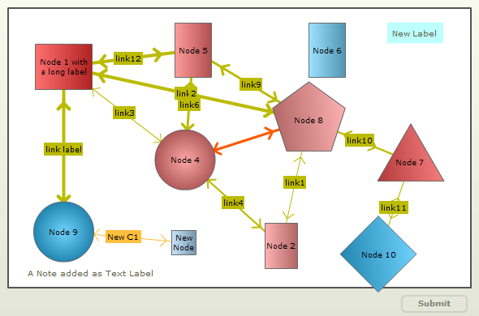

| Reading data using JavaScript |
|
In our previous section, we had seen how to submit the updated data from chart to a server-side script as form elements. You can also access the updated XML data at client-side using JavaScript. You can parse this data and update your data sources through AJAX, etc. Here, we will see how to read the updated data using JavaScript functions present on the same page. |
Once the chart is rendered, whenever we need access to chart's updated data as XML, we can simply call the getXMLData() function on the chart:
//Get a reference to our chart var ourChart = FusionCharts("NodeChart"); //Get the data from chart var xmlRtn = ourChart.getXMLData(); //Show it to user in alert box. alert(xmlRtn); |
| The function, getXMLData(), returns the latest or changed data. This function is also used to retrieve the original data from the chart. To get the original data from the chart you need pass false as a parameter to the function. For example, var xmlRtn = ourChart.getXMLData(false); |
|
Let's take an example to view the updated XML using the getXMLData function. To show the changes we have used the same chart which is used in the Overview page. We will make the following run-time changes in the chart:
The chart with the changes looks as under: |
 Try it Live!For the above chart, we get the following XML data by using the getXMLData function. Note that, in the XML data, shown below, we have used highlighted blocks to specify the nodes where the changes have been made. The data is as under: |
<chart palette='2' xaxisminvalue='0' xaxismaxvalue='100' yaxisminvalue='0' yaxismaxvalue='100' is3d='1' showformbtn='1' viewmode='0' >
<dataset seriesname='DS1' >
<set id='1' x='12' y='79' name='Node 1 with a long label' height='56' width='70' shape='RECTANGLE' toolText='Node 1 with a long label' color='FE3233'/>
<set id='2' x='59' y='15' name='Node 2' height='56' width='40' shape='RECTANGLE' toolText='Node 2' color='FE9191'/>
<set id='4' x='38.2631578947368' y='45.7246376811594' name='Node 4' radius='37' shape='CIRCLE' toolText='Node 4' color='FE8181'/>
<set id='5' x='40' y='85' name='Node 5' height='67' width='45' shape='RECTANGLE' toolText='Node 5' color='FE7272'/>
<set id='6' x='69' y='85' name='Node 6' height='67' width='45' shape='RECTANGLE' toolText='Node 6' color='72D4FE'/>
<set id='7' x='87' y='45' name='Node 7' numSides='3' radius='47' shape='POLYGON' toolText='Node 7' color='FE5151'/>
<set id='8' x='65' y='60' name='Node 8' numSides='5' radius='47' shape='POLYGON' toolText='Node 8' color='FE9191'/>
<set id='9' x='12' y='20' name='Node 9' radius='37' shape='CIRCLE' toolText='Node 9' color='33C1FE'/>
<set id='10' x='80' y='12' name='Node 10' numSides='4' radius='47' shape='POLYGON' toolText='Node 10' color='33C1FE'/>
<set id='ND' x='37.8947368421053' y='16.231884057971' name='New Node' height='30' width='30' shape='RECTANGLE' toolText='New Node' color='afd8f8'/>
</dataset>
<connectors color='FF0000' stdthickness='5' >
<connector from='1' to='9' color='BBBB00' strength='0.96' alpha='100' arrowAtStart='1' arrowAtEnd='1' link='' label='link label' />
<connector from='1' to='5' color='BBBB00' strength='0.8' alpha='100' arrowAtStart='1' arrowAtEnd='1' link='' label='link12' />
<connector from='1' to='8' color='BBBB00' strength='0.8' alpha='100' arrowAtStart='1' arrowAtEnd='1' link='' label='link2' />
<connector from='1' to='4' color='BBBB00' strength='0.3' alpha='100' arrowAtStart='1' arrowAtEnd='1' link='' label='link3' />
<connector from='2' to='4' color='BBBB00' strength='0.4' alpha='100' arrowAtStart='1' arrowAtEnd='1' link='' label='link4' />
<connector from='2' to='8' color='BBBB00' strength='0.33' alpha='100' arrowAtStart='1' arrowAtEnd='1' link='' label='link1' />
<connector from='4' to='5' color='BBBB00' strength='0.7' alpha='100' arrowAtStart='1' arrowAtEnd='1' link='' label='link6' />
<connector from='4' to='8' color='FF5904' strength='0.6' alpha='100' arrowAtStart='1' arrowAtEnd='1' link='' label='' />
<connector from='5' to='8' color='BBBB00' strength='0.6' alpha='100' arrowAtStart='1' arrowAtEnd='1' link='' label='link9' />
<connector from='7' to='8' color='BBBB00' strength='0.5' alpha='100' arrowAtStart='1' arrowAtEnd='1' link='' label='link10' />
<connector from='7' to='10' color='BBBB00' strength='0.3' alpha='100' arrowAtStart='1' arrowAtEnd='1' link='' label='link11' />
<connector from='ND' to='9' color='ffbe3c' strength='0' alpha='100' arrowAtStart='1' arrowAtEnd='1' link='' label='New C1' />
</connectors>
<labels >
<label text='A Note added as Text Label' x='18' y='5' color='60634E' alpha='100' fontSize='10' bgColor='' borderColor='' padding='5' allowDrag='1' />
<label text='New Label' x='88.0701754385965' y='91.0144927536232' color='60634e' alpha='100' fontSize='10' bgColor='bcfffc' borderColor='' padding='7' allowDrag='1' />
</labels>
</chart>
|